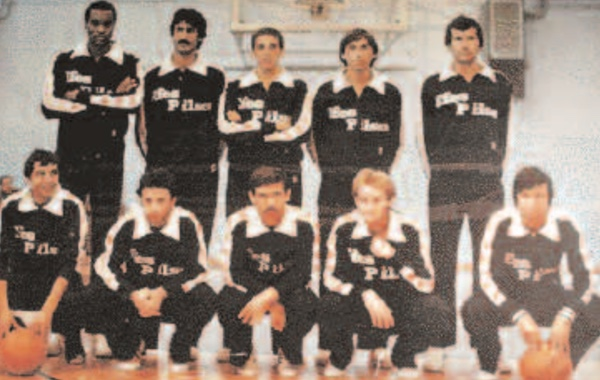
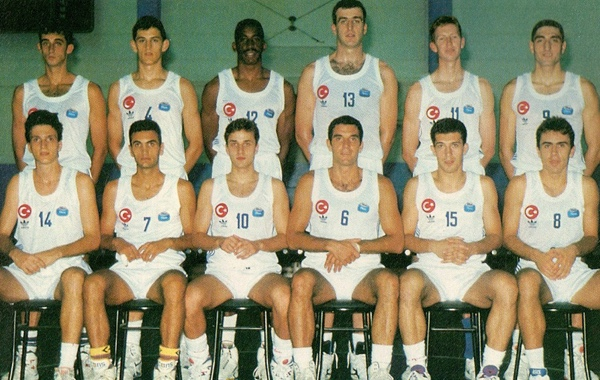

Anadolu Efes Spor Kulübü, Efes Pilsen Spor Kulübü adıyla 1976 yılında Kadıköy Spor’un devralınmasıyla kurulmuştur.
Tuncay Özilhan başkanlığında, Genel Kaptan Pano Natof, Kulüp Müdürü Berna Sirmen, Yönetici Talat Öztoprak ve antrenör Faruk Akagün’ün yanı sıra idari ve teknik kadrosuyla ülke sporunun gelişmesine katkıda bulunmak amacıyla çalışmalarına başlamıştır.
Kulübümüzün temel amacı; Türk sporunu ileriye götürmek ve Avrupa sahalarında ülkemizi başarı ile temsil ederek basketbolumuzu tüm gençlere sevdirmektir.
2011 yılının Mayıs ayında Efes Pilsen Spor Kulübü’nün adı 07 Ocak 2011 tarihli ilgili TAPDK yönetmeliği gereği değiştirilmiştir. Bu tarih itibarı ile kulüp yoluna Anadolu Efes Spor Kulübü olarak devam etmektedir.

İlklerin Takımı Anadolu Efes
Anadolu Efes Spor Kulübü’nün Türk basketbolunda gerçekleştirdiği ilkler ise şu şekildedir:
Avrupa’da takımlar düzeyinde kupa kaldıran ilk Türk Kulübü (1996 FIBA Koraç Kupası)
Avrupa kupalarında kulüpler bazında final oynayan ilk Türk Kulübü (1992-1993 sezonu FIBA Saporta Kupası)
Avrupa'da en üst düzey kulüpler basketbol organizasyonunda Final Four’a kalan ilk Türk takımı. 1999-2000 ve 2000-2001 sezonlarında Final Four organizasyonlarında üçüncü olan Anadolu Efes, 2018 – 2019 sezonu EuroLeague Final Four’unda ise ikinci olmuştur.
Avrupa’nın en üst düzey basketbol organizasyonunda Final Four organizasyonuna ev sahipliği yapan ilk Türk Kulübü (FIBA Avrupa Ligi 1992 Final Four)
Avrupa kupalarındaki bir final maçına ev sahipliği yapan ilk Türk Kulübü (1994-1995 sezonu FIBA Avrupa Kupası Finali)
NBA’e Türk sporcu gönderen ilk Türk Kulübü (Mirsad Türkcan – New York Knicks)
Amerika Birleşik Devletleri’nde NBA takımlarıyla maç yapan ilk Türk Kulübü (10 Ekim 2006: Denver Nuggets ve 12 Ekim 2006: Golden State Warriors)
Bir NBA takımıyla Türkiye’de maç yapan ilk kulüp (6 Ekim 2007 – Minnesota Timbervolwes)
Türk basketbol tarihinde Avrupa Kupaları’nda 500’den fazla maça çıkan ilk Türk kulübü ve EuroLeague’de 400’den fazla maça çıkan ilk Türk kulübü
Euroleague'de iki şampiyonluğu bulunan tek Türk takımı
Euroleague tarafından Avrupa’nın En İyi Pazarlama Yapan takımı seçilen ilk ve tek Türk takımı. (2010, 2013, 2017, 2020 ve 2022 yılları)
Euroleague'in sosyal sorumluluk programı olan One Team ödüllerinde üst üste iki kez altın ödül sahibi olan tek takım. (2019 ve 2020)
Türkiye’de basketbolun sevilmesinde en büyük paya sahip olan Anadolu Efes Spor Kulübü, aynı zamanda Türk basketbolunun en çok kupa kazanan takımıdır:
2 Turkish Airlines Euroleague Şampiyonluğu
1 Koraç Kupası Şampiyonluğu
15 Türkiye Basketbol Ligi Şampiyonluğu
12 Türkiye Kupası Şampiyonluğu
13 Cumhurbaşkanlığı Kupası Şampiyonluğu
2 G.S.G.M. Kupası Şampiyonluğu
1 Basketbol Gençler Ligi Şampiyonluğu
4 Ümit Takım Türkiye Şampiyonluğu
20 Genç Takım Türkiye Şampiyonluğu
18 Yıldız Takım Türkiye Şampiyonluğu
15 Küçük Takım Türkiye Şampiyonluğu
Anadolu Efes Spor Kulübü ayrıca Türkiye Basketbol Ligi, Türkiye Kupası ve Cumhurbaşkanlığı Kupası’nda en çok şampiyonluğa sahip olan kulüp olmayı sürdürmektedir.